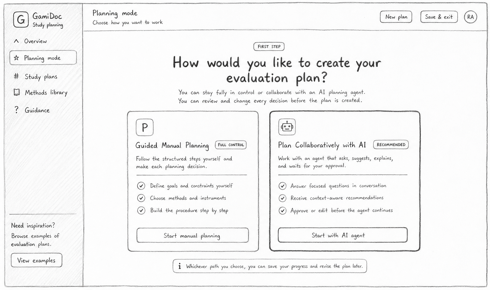
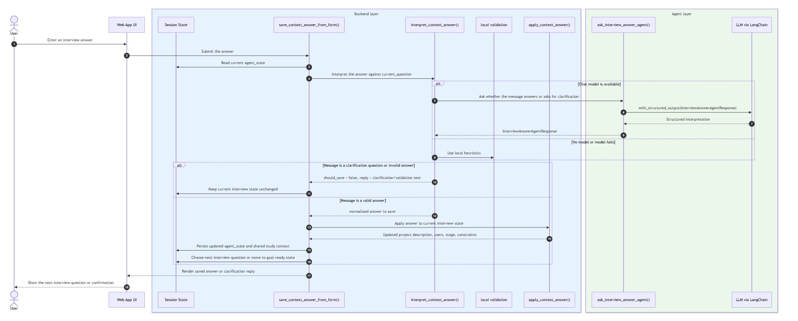
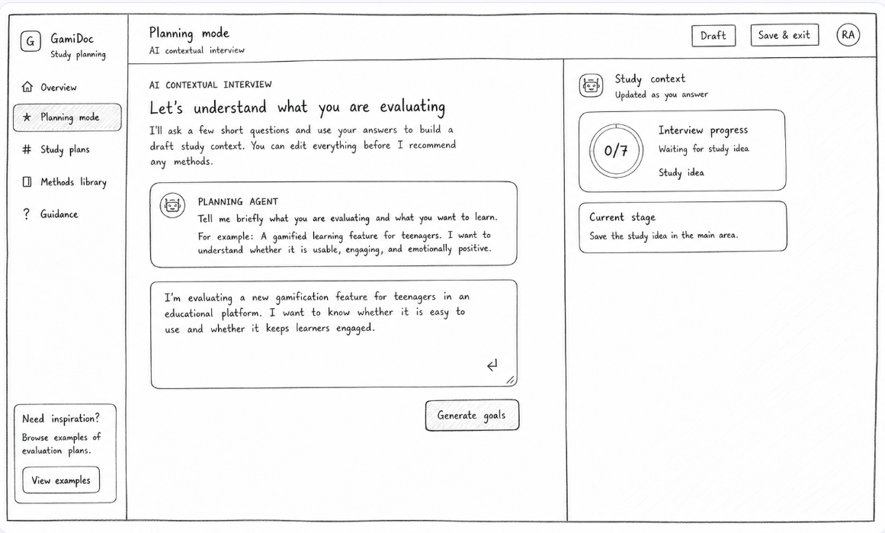

“It feels generic and not personalized.”
Case Study
GamiDoc Collaborative AI Agent
Extending GamiDoc from a guided evaluation flow into a collaborative AI-supported planning experience.
After redesigning the GamiDoc evaluation planning flow, I explored how a collaborative AI agent could help users move from uncertainty to a concrete study plan. The agent is designed to ask focused questions, capture study context, and guide users toward the right evaluation decisions without making the process feel overwhelming.

Methods
- Follow-up user feedback analysis
- AI-assisted workflow redesign
- Conversational interaction design
- Information architecture refinement
- Prototype evaluation planning
Role
UX researcher
UX/UI designer
Front-end contributor
AI workflow designer
Context
Follow-up work after the GamiDoc evaluation planning redesign
Fondazione Bruno Kessler (FBK), Italy
GamiDoc platform
Tools
Figma
FigJam
Python
LangChain
HTML/CSS
Year
2026
Duration
July 2026 - Present
Ongoing
Problem Statement
Users still needed help turning evaluation goals into a clear plan.
The previous GamiDoc evaluation showed that the guided flow was clear and usable, but users still needed stronger support when moving from selected goals to concrete evaluation decisions. Feedback highlighted that recommendations could feel generic, that users wanted clearer explanations of why methods fit their project, and that manual selection could create choice overload. This created the opportunity to add a collaborative AI agent.
“I do not have explanations on how it fits my project.”
“I thought it would give me full instruments.”
“It is more of a receipt than a guide.”
Main Insight
The next layer of guidance needed to be collaborative, not only structural.
The first redesign organized GamiDoc into a step-by-step evaluation planning flow. The follow-up insight was that structure alone was not enough for early-stage planning. Users also needed contextual rationale, more actionable next steps, and intelligent support for choosing instruments. The AI agent became a design response to those needs.
Study idea
AI questions
Context draft
Method guidance
Review
Study plan
Design Focus
Sketching the AI agent as a planning companion.
Before moving into implementation, I explored the new planning experience through low-fidelity sketches and iterated on the structure several times. After shaping the general idea in Figma, I prototyped it faster as a working website in Codex so I could test the flow, adjust the interaction, and finalize the direction. This early sketch compared manual planning with AI-supported planning and helped me define where the collaborative agent should enter the workflow.

Technical Direction
Translating the sketch into an AI-supported workflow.
To move from the sketch concept to a working AI-supported planning flow, I explored how the agent should reason over GamiDoc's evaluation knowledge. I worked with LangChain to structure the conversational flow, then analyzed where simple prompting was not enough. Because the agent needed to connect user context with methods, instruments, and rationale from a curated knowledge base, I identified RAG as an important technical direction. This allowed the design to become more than a chat interface: the agent could retrieve relevant UX evaluation knowledge, explain why a method fits a user's project, and support more personalized planning decisions. I also mapped the background interaction behind the chat screen, including session state, local validation, fallback behavior, and the LangChain agent layer.

Prototype Design
From guided workflow to interactive AI-supported planning.
The prototype connects the original GamiDoc planning steps with a conversational layer. Users can begin with a study idea, answer focused prompts, review the generated context, and continue into method and instrument selection with a stronger sense of direction.

Current Status
The AI-supported planning flow currently works, and the final design is still in progress.
This project is still ongoing. The current prototype works as a functional AI-supported planning flow, but I am still refining the final interface, interaction details, and presentation quality. The final design will be shared later after the next iteration is complete.
Loading next iteration...